딥러닝
= 손실 함수를 최소화 하는 거임
Gradient Desenct가 쓰임
최적값이 세타를 찾아야 함.
기울기 방향으로 이동하며 → 최소값을 찾음
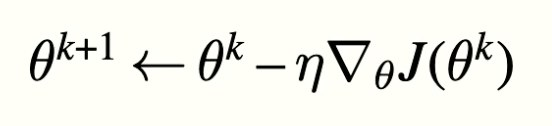
→ one iteration.
eta → learning rate 역할을 하고, 한번에 얼마나 변할지를 정함.
데이터가 너무 많아서, 학습하기 힘들 때가 많음
sub set에만 GD를 하는 것과 전체 데이터에 하는 것과 비슷하다고 가정함.
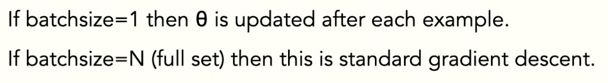
이렇게 하면 빠름. + 로컬 minimum에서 벗어날 수 있음
좀 불안정함.
GD에서 업데이트 방향으로 관성을 가지고 업데이트 하게 됨
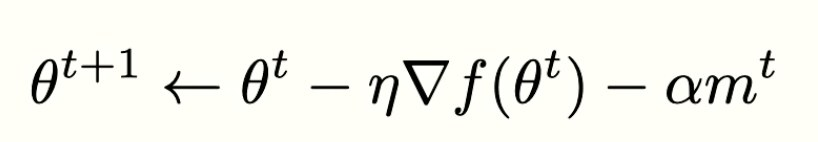
너무 작은 모멘텀 → 최소값에 적당히 천천히 감
적당한 모멘텀 → 최소값에 더 빨리 도달 할 수 있음
너무 높은 모멘텀 → 최소값을 지나가버림
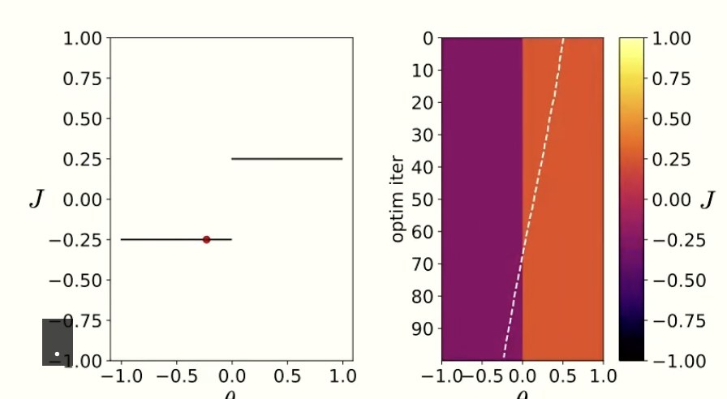
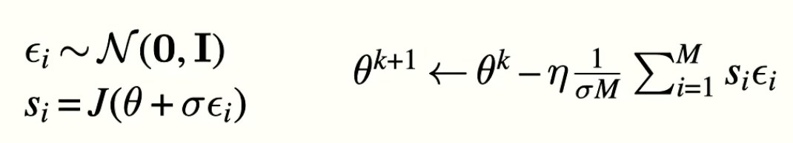
?? 모르겠어요
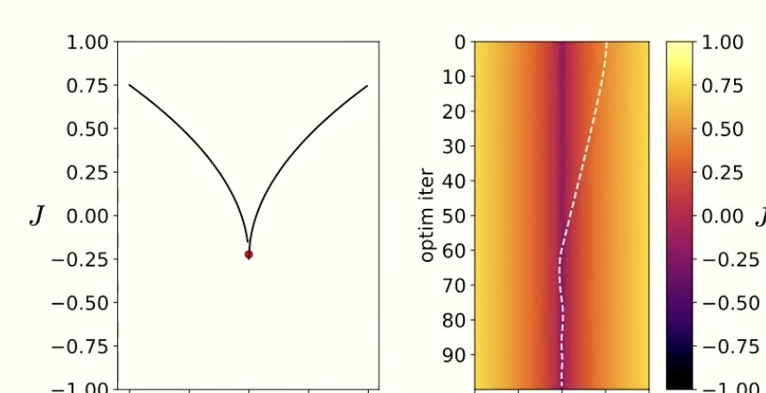
기울기가 너무 커지면 → 다시 스케일리 하면 됨.
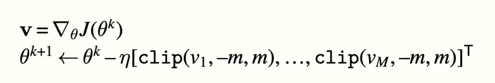
매개변수의 변화량을 계산 → 그 방향으로 이동(여기까지 같음)
but 최대값이 제한됨.
연속 / 미분 가능 / 매끄러워야 함.
EX> ReLU = max(0,z)
smooth하지 않음.
→ GeLU같은 걸 씀.(smooth함)
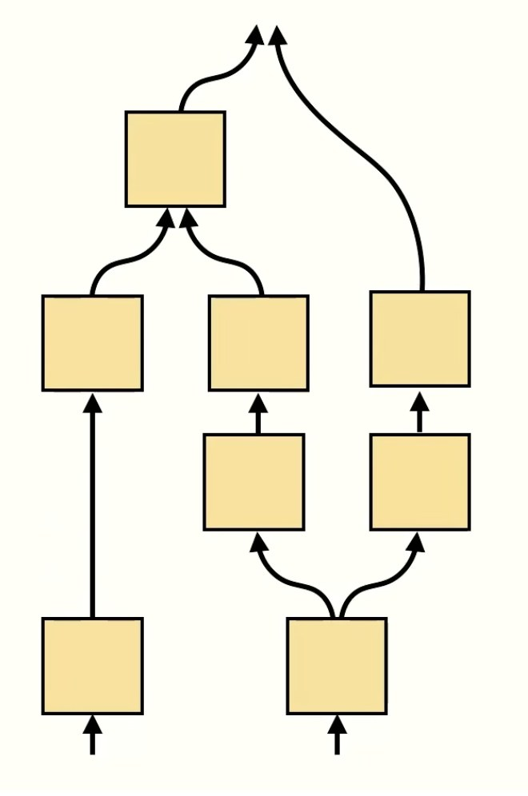
아래가 input, 위로 갈수록 output
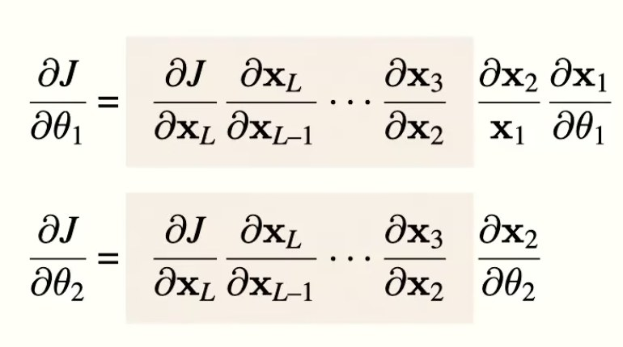
Computation Graphs에서 세타에 대한 적분을 하기 위한 방법.
Chaing rule을 이용해 backward 방향으로 미분값을 얻음
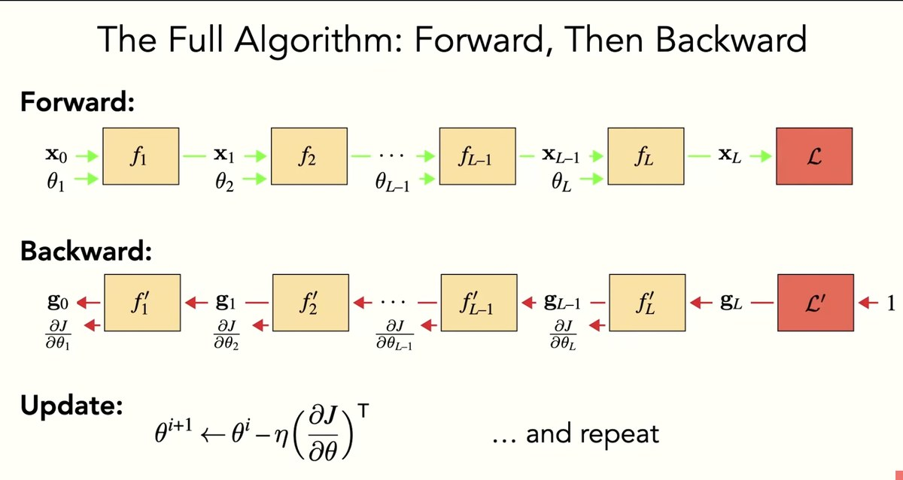
forward → backward → update 반복하면 training
Linear layer
Forward = 그냥 f = Wx 곱하면 됨.
Backprop
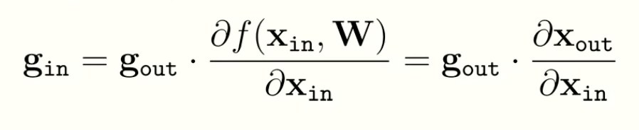
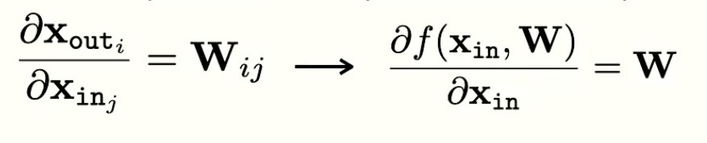
therefore
loss function을 구하려면
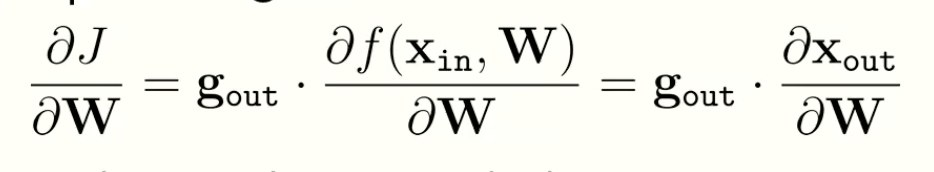
gout → chainrule 역할
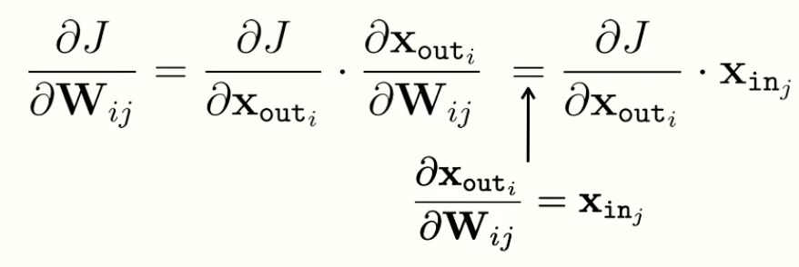
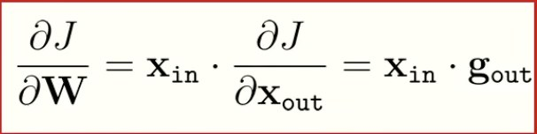
update 할 때 이거를 쓰게 됨.
Easy to optimize
ccompositional “block based programming”